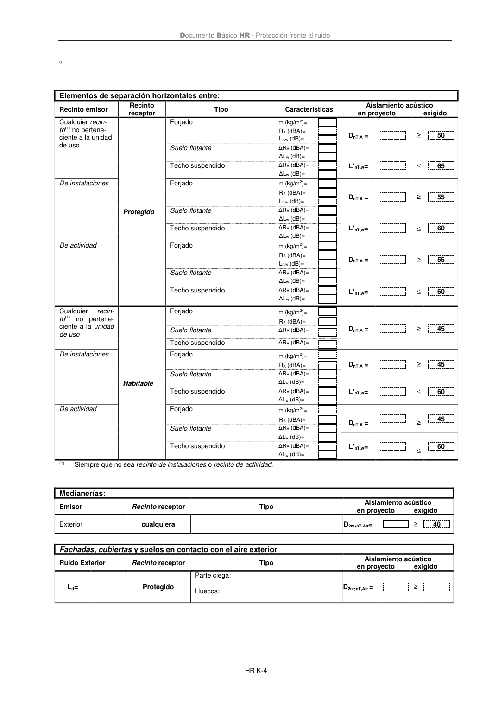
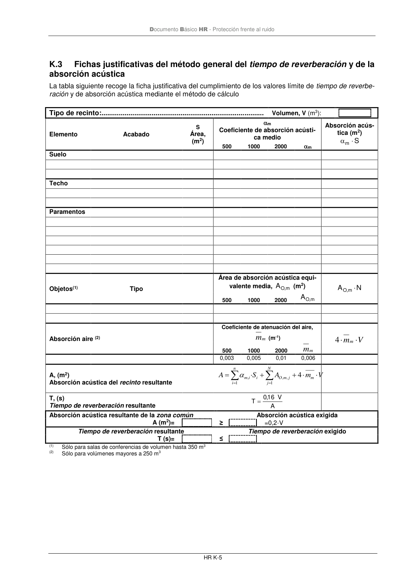

DB-HR Protección frente al ruido · edición 2019-12-20 · capa oficial
Documento DB-HR-oficial · SHA-256 del PDF a67baeca5138bb1f121f797d23a79a4557bd9ac4abacd954024893e05411eeab
Copia fiel del PDF fuente · Fuente oficial
Ficha de la disposición en la fuente oficial
Formatos: JSON del segmento · Markdown
K.2 Fichas justificativas de la opción general de aislamiento acústico Fichas justificativas de la opción general de aislamiento acústico Las tablas siguientes recogen las fichas justificativas del cumplimiento de los valores límite de aislamien- to acústico mediante el método de cálculo. Tabiquería. (apartado 3.1.2.3.3) Tipo Características de proyecto exigidas m (kg/m2)= ≥ - RA (dBA)= ≥ 33 Elementos de separación verticales entre: Recinto emisor Recinto receptor Tipo Características Aislamiento acústico en proyecto exigido Cualquier recin- to(1) no pertene- ciente a la unidad de uso (si los recintos no comparten puer- tas o ventanas) Protegido Elemento base m (kg/m2)= DnT,A = ≥ 50 RA (dBA)= Trasdosado ΔRA (dBA)= Cualquier recin- to(1) no pertene- ciente a la unidad de uso (si los recintos comparten puer- tas o ventanas) Puerta o ventana RA= ≥ 30 Cerramiento RA= ≥ 50 De instalaciones Elemento base m (kg/m2)= DnT,A = ≥ 55 RA (dBA)= Trasdosado ΔRA (dBA)= De actividad Elemento base m (kg/m2)= DnT,A = ≥ 55 RA (dBA)= Trasdosado ΔRA (dBA)= Cualquier recin- to(1) no pertene- ciente a la unidad de uso (si los recintos no comparten puer- tas o ventanas) Habitable Elemento base m (kg/m2)= DnT,A = ≥ 45 RA (dBA)= Trasdosado ΔRA (dBA)= Cualquier recin- to(1)(2) no pertene- ciente a la unidad de uso (si los recintos comparten puer- tas o ventanas) Puerta o ventana RA= ≥ 20 Cerramiento RA= ≥ 50 De instalaciones (si los recintos no comparten puer- tas o ventanas) Elemento base m (kg/m2)= DnT,A = ≥ 45 RA (dBA)= Trasdosado ΔRA (dBA)= De instalaciones (si los recintos comparten puer- tas o ventanas) Puerta o ventana RA= ≥ 30 Cerramiento RA= ≥ 50 De actividad (si los recintos no comparten puer- tas o ventanas) Elemento base m (kg/m2)= DnT,A = ≥ 45 RA (dBA)= Trasdosado ΔRA (dBA)= De actividad (si los recintos comparten puer- tas o ventanas) Puerta o ventana RA= ≥ 30 Cerramiento RA= ≥ 50 (1) Siempre que no sea recinto de instalaciones o recinto de actividad. (2) Sólo en edificios de uso residencial o hospitalario; Documento Básico HR - Protección frente al ruido HR K-4 º Elementos de separación horizontales entre: Recinto emisor Recinto receptor Tipo Características Aislamiento acústico en proyecto exigido Cualquier recin- to(1) no pertene- ciente a la unidad de uso Protegido Forjado m (kg/m2)= DnT,A = ≥ 50 RA (dBA)= Ln,w (dB)= Suelo flotante ΔRA (dBA)= ΔLw (dB)= L’nT,w= 65 Techo suspendido ΔRA (dBA)= ΔLw (dB)= De instalaciones Forjado m (kg/m2)= DnT,A = ≥ 55 RA (dBA)= Ln,w (dB)= Suelo flotante ΔRA (dBA)= ΔLw (dB)= L’nT,w= 60 Techo suspendido ΔRA (dBA)= ΔLw (dB)= De actividad Forjado m (kg/m2)= DnT,A = ≥ 55 RA (dBA)= Ln,w (dB)= Suelo flotante ΔRA (dBA)= ΔLw (dB)= L’nT,w= 60 Techo suspendido ΔRA (dBA)= ΔLw (dB)= Cualquier recin- to(1) no pertene- ciente a la unidad de uso Habitable Forjado m (kg/m2)= DnT,A = ≥ 45 RA (dBA)= Suelo flotante ΔRA (dBA)= Techo suspendido ΔRA (dBA)= De instalaciones Forjado m (kg/m2)= DnT,A = ≥ 45 RA (dBA)= Suelo flotante ΔRA (dBA)= ΔLw (dB)= L’nT,w= 60 Techo suspendido ΔRA (dBA)= ΔLw (dB)= De actividad Forjado m (kg/m2)= DnT,A = ≥ 45 RA (dBA)= Suelo flotante ΔRA (dBA)= ΔLw (dB)= L’nT,w= 60 Techo suspendido ΔRA (dBA)= ΔLw (dB)= (1) Siempre que no sea recinto de instalaciones o recinto de actividad. Medianerías: Emisor Recinto receptor Tipo Aislamiento acústico en proyecto exigido Exterior cualquiera D2m,nT,Atr= ≥ 40 Fachadas, cubiertas y suelos en contacto con el aire exterior Ruido Exterior Recinto receptor Tipo Aislamiento acústico en proyecto exigido Ld= Protegido Parte ciega: D2m,nT,Atr = ≥ Huecos: Documento Básico HR - Protección frente al ruido HR K-5

